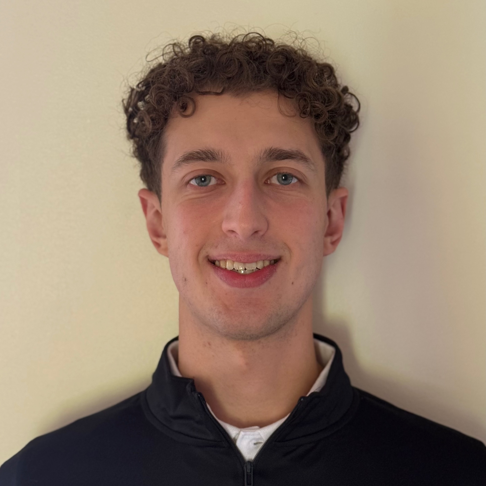

I am an undergraduate researcher at the University of Maryland interested in experimental quantum science, particularly neutral-atom quantum information, quantum sensing, and quantum control.
My research spans Rydberg-atom interactions, solid-state spin systems, quantum sensing, and the development of hardware and control techniques for quantum experiments.

I study interactions in Rydberg atomic systems, including microwave-controlled interactions and dual-species atomic ensembles. I am particularly interested in using controllable Rydberg interactions for quantum information processing and quantum simulation.
My work in solid-state quantum sensing focuses on spin control, dynamical decoupling, and sensing protocols for color-center systems, including nitrogen-vacancy centers in diamond and spin defects in hexagonal boron nitride.
I develop experimental control tools for quantum systems using RFSoC-based electronics and FPGA control. My interests include low-latency pulse generation, adaptive experiments, feedback, and hardware-software integration for quantum experiments.
Quantum sensing, solid-state spin control, RFSoC-based experimental control, and color-center quantum systems.
Experimental and theoretical work on microwave-dressed Rydberg interactions in dual-species atomic ensembles.
Experimental AMO research and development of optical control systems for cold-atom experiments.